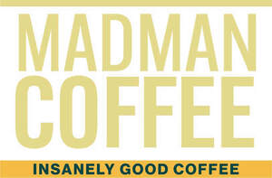

Trade Mark Journal No.2025/037 12 September 2025
UK00004259517 4 September 2025 (30)

- Class 30
- Coffee beans; Unroasted coffee beans; Roasted coffee beans; Ground coffee beans; Sugar-coated coffee beans; Coffee; Coffee (Unroasted -); Unroasted coffee; Decaffeinated coffee; Coffee pods; Mixtures of malt coffee with coffee; Chocolate bark containing ground coffee beans; Coffee substitutes [artificial coffee or vegetable preparations for use as coffee]; Chocolate coffee; Vanilla beans; Iced coffee; Jelly beans; Coffee extracts for use as substitutes for coffee; Coffee bags; Freeze-dried coffee; Coffee essences for use as substitutes for coffee; Flavoured coffee; Caffeine-free coffee; Coffee beverages; Mixtures of malt coffee extracts with coffee; Coffee in whole-bean form; Mixtures of coffee and chicory; Malt coffee; Coffee drinks; Coffee flavorings; Coffee capsules; Chicory for use as substitutes for coffee; Coffee beverages with milk; Ground coffee; Drip bag coffee; Chicory [coffee substitute]; Mixtures of malt coffee with cocoa; Coffee oils; Mixtures of coffee; Coffee mixtures; Bread made with soya beans; Coffee flavourings; Bread with soy bean; Powdered coffee in drip bags; Roasted brown rice tea; Coffee, teas and cocoa and substitutes therefor; Coffee [roasted, powdered, granulated, or in drinks]; Roasted barley and malt for use as substitute for coffee; Barley for use as a coffee substitute; Aerated drinks [with coffee, cocoa or chocolate base]; Aerated beverages [with coffee, cocoa or chocolate base]; Instant coffee; Coffee extracts; Bean meal; Beverages with coffee base; Beverages with a coffee base; Roasted barley tea; Mixtures of coffee essences and coffee extracts; Espresso; Substitutes (Coffee -); Coffee substitutes; Mixtures of coffee and malt; Beverages made from coffee; Beverages made of coffee; Coffee in brewed form; Coffee essences; Chicory mixtures for use as substitutes for coffee; Mixtures of chicory for use as coffee substitutes; Mixtures of chicory for use as substitutes for coffee; Mung bean porridge; Coffee based beverages; Malt coffee extracts; Coffee based drinks; Chicory extracts for use as substitutes for coffee; Coffee substitutes [grain or chicory based]; Chicory and chicory mixtures, all for use as substitutes for coffee; Tea pods.
Madman Coffee Ltd